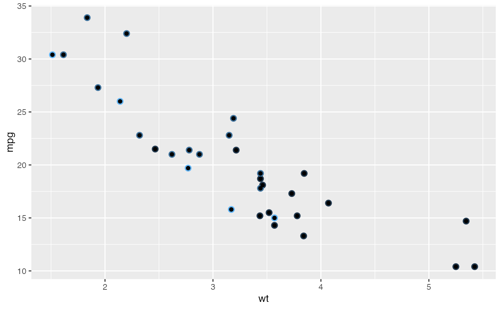
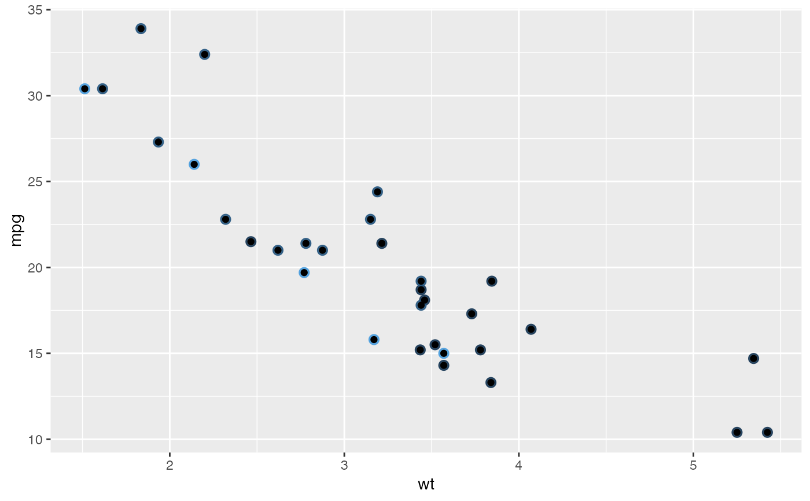

Colour scales for continuous data default to the values of the `ggplot2.continuous.colour` and `ggplot2.continuous.fill` options. These [options()] default to `"gradient"` (i.e., [scale_colour_gradient()] and [scale_fill_gradient()])
Arguments
- ...
Additional parameters passed on to the scale type
- type
One of the following: * "gradient" (the default) * "viridis" * A function that returns a continuous colour scale.
Color Blindness
Many color palettes derived from RGB combinations (like the "rainbow" color palette) are not suitable to support all viewers, especially those with color vision deficiencies. Using `viridis` type, which is perceptually uniform in both colour and black-and-white display is an easy option to ensure good perceptive properties of your visulizations. The colorspace package offers functionalities - to generate color palettes with good perceptive properties, - to analyse a given color palette, like emulating color blindness, - and to modify a given color palette for better perceptivity.
For more information on color vision deficiencies and suitable color choices see the [paper on the colorspace package](https://arxiv.org/abs/1903.06490) and references therein.
See also
[scale_colour_gradient()], [scale_colour_viridis_c()], [scale_colour_steps()], [scale_colour_viridis_b()], [scale_fill_gradient()], [scale_fill_viridis_c()], [scale_fill_steps()], and [scale_fill_viridis_b()]
Examples
library( ggplot2 )
p <- ggplot(mtcars, aes(wt, mpg, shadowcolor=gear))
p + geom_shadowpoint() + scale_shadowcolour_continuous() + guides(shadowcolour='none')

library( ggplot2 )
p <- ggplot(mtcars, aes(wt, mpg, shadowcolor=gear))
p + geom_shadowpoint() + scale_shadowcolour_binned() + guides(shadowcolour='none')
